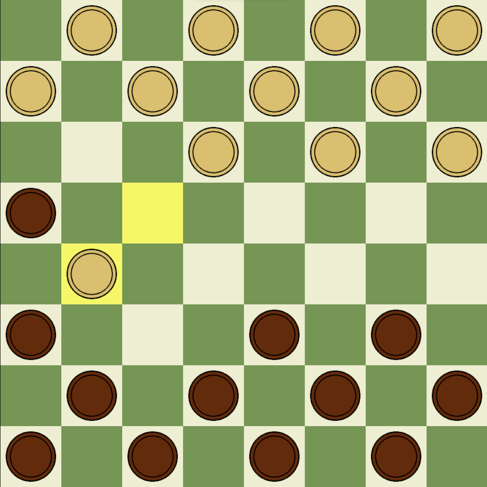

Checkers
Standard game of checkers.
- This game is played on only one colour of square
- All pieces move diagonally one square at a time
- A piece is promoted to a queen if it reaches the opposite side of the board
- Normal pieces can only move diagonally forward, queens can move diagonally in any direction
- Any piece can take in any direction by jumping over another piece
- Jumps to take pieces can be chained together in a single turn
- If you can take on your turn you must

Black to move, black must take